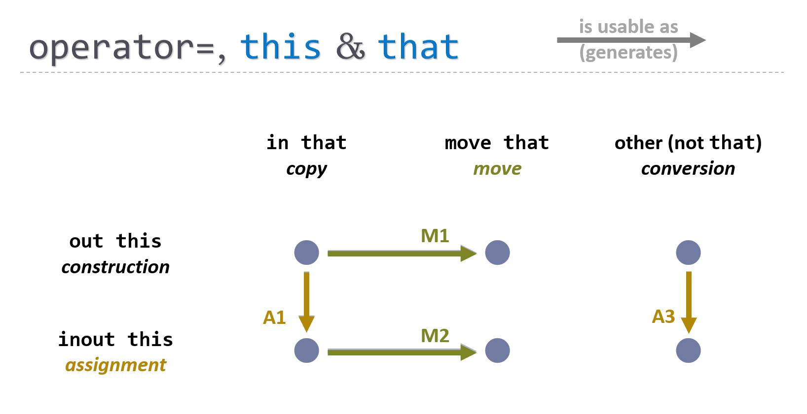

Types
Overview
A user-defined type is written using the same name : kind = value declaration syntax as everything in Cpp2. The type's "value" is a {}-enclosed body containing more declarations.
In a type, data members are private by default, and functions and nested types are public by default. To explicitly declare a type scope declaration public, protected, or private, write that keyword at the beginning of the declaration.
mytype: type =
{
// data members are private by default
x: std::string;
// functions are public by default
protected f: (this) = { do_something_with(x); }
// ...
}
this — The parameter name
this is a synonym for the current object. Inside the scope of a type that has a member named member, member by default means this.member.
Note: In Cpp2,
thisis not a pointer.
The name this may only be used for the first parameter of a type-scope function (aka member function). It is never declared with an explicit : its_type because its type is always the current type.
this can be an in (default), inout, out, or move parameter. Which you choose naturally determines what kind of member function is being declared:
-
in this: Writingmyfunc: (this /*...*/), which is shorthand formyfunc: (in this /*...*/), defines a Cpp1const-qualified member function, becauseinparameters areconst. -
inout this: Writingmyfunc: (inout this /*...*/)defines a Cpp1 non-constmember function. -
out this: Writingmyfunc: (out this /*...*/)defines a Cpp1 constructor... and more. (See below.) -
move this: Writingmyfunc: (move this /*...*/)defines a Cpp1&&-qualified member function, or if there are no additional parameters it defines the destructor.
For example, here is how to write read-only member function named print that takes a read-only string value and prints this object's data value and the string message:
mytype: type = {
data: i32; // some data member (private by default)
print: (this, msg: std::string) = {
std::cout << data << msg;
// "data" is shorthand for "this.data"
}
// ...
}
this — Inheritance
Base types are written as members named this. For example, just as a type could write a data member as data: string = "xyzzy";, which is pronounced "data is a string defined as having the default value "xyzzy", a base type is written as this: Shape = (default, values);, which is pronounced "this is a Shape defined as having these default values."
Cpp2 syntax has no separate base list or separate member initializer list.
Because base and member subobjects are all declared in the same place (the type body) and initialized in the same place (an operator= function body), they can be written in any order, including interleaved, and are still guaranteed to be safely initialized in declared order. This means that in Cpp2 you can declare a data member object before a base subobject, so that it naturally outlives the base subobject.
Cpp2 code doesn't need workarounds like Boost's
base_from_member, because all of the motivating examples for that can be written directly. See this explanation for details.
virtual, override, and final — Virtual functions
A this parameter can additionally be declared as one of the following:
-
virtual: Writingmyfunc: (virtual this /*...*/)defines a new virtual function. -
override: Writingmyfunc: (override this /*...*/)defines an override of an existing base class virtual function. -
final: Writingmyfunc: (final this /*...*/)defines a final override of an existing base class virtual function.
A pure virtual function is a function with a virtual this or override this parameter and no body.
For example:
abstract_base: type
= {
// A pure virtual function: virtual + no body
print: (virtual this, msg: std::string);
// ...
}
derived: type
= {
// 'this' is-an 'abstract_base'
this: abstract_base;
// Explicit override
print: (override this, msg: std::string) = { /*...*/ }
// ...
}
implicit — Controlling conversion functions
A this parameter of an operator= function can additionally be declared as:
implicit: Writingoperator=: (implicit out this, /*...*/)defines a function that will not be marked as "explicit" when lowered to Cpp1 syntax.
Note: This reverses the Cpp1 default, where constructors are not "explicit" by default, and you have to write "explicit" to make them explicit.
operator= — Construction, assignment, and destruction
All value operations are spelled operator=, including construction, assignment, and destruction. operator= sets the value of this object, so the this parameter can be passed as anything but in (which would imply const):
-
out this: Writingoperator=: (out this /*...*/ )is naturally both a constructor and an assignment operator, because anoutparameter can take an uninitialized or initialized argument. If you don't also write a more-specializedinout thisassignment operator, Cpp2 will use theout thisfunction also for assignment. -
inout this: Writingoperator=: (inout this /*...*/ )is an assignment operator (only), because aninoutparameter requires an initialized modifiable argument. -
move this: Writingoperator=: (move this)is the destructor. No other parameters are allowed, so it connotes "movethisnowhere."
Unifying operator= enables usable out parameters, which is essential for composable guaranteed initialization. We want the expression syntax x = value to be able to call a constructor or an assignment operator, so naming them both operator= is consistent.
An assignment operator always returns the same type as this and automatically performs return this;.
Note: Writing
=always invokes anoperator=(in fact for a Cpp2-authored type, and semantically for a Cpp1-authored type). This avoids the Cpp1 inconsistency that "writing=callsoperator=, except when it doesn't" (such as in a Cpp1 variable initialization). Conversely,operator=is always invoked by=in Cpp2.
that — A source parameter
All type-scope functions can have that as their second parameter, which is a synonym for the object to be copied/moved from. Like this, at type scope it is never declared with an explicit : its_type because its type is always the current type.
that can be an in (default) or move parameter. Which you choose naturally determines what kind of member function is being declared:
-
in that: Writingmyfunc: (/*...*/ this, that), which is shorthand formyfunc: (/*...*/ this, in that), is naturally both a copy and move function, because it can accept an lvalue or an rvaluethatargument. If you don't write a more-specializedmove thatmove function, Cpp2 will automatically use thein thatfunction also for move. -
move that: Writingmyfunc: (/*...*/ this, move that)defines a move function.
Putting this and that together: The most general form of operator= is operator=: (out this, that). It works as a unified general {copy, move} x { constructor, assignment } operator, and generates all of four of those in the lowered Cpp1 code if you didn't write a more specific one yourself.
operator= can generalize (A)ssignment from construction, and (M)ove from copy
As mentioned above:
- If you don't write an inout this function, Cpp2 will use your out this function in its place (if you wrote one).
- If you don't write a move that function, Cpp2 will use your in that function in its place (if you wrote one).
Note: When lowering to Cpp1, this just means generating the applicable special member functions from the appropriate Cpp2 function.
This graphic summarizes these generalizations. For convenience I've numbered the (A)ssignment and (M)ove defaults.

In Cpp1 terms, they can be described as follows:
-
(M)ove, M1, M2: If you write a copy constructor or assignment operator, but not a corresponding move constructor or assignment operator, the latter is generated.
-
(A)ssignment, A1, A3: If you write a generalized constructor, but none of the three more-specific copy/move constructor/assignment functions, the latter three get generated. If you write a converting copy constructor, but no converting assignment operator for the same type and this is not a polymorphic type, the latter is generated.
-
The arrows are transitive. For example, if you write a copy constructor and nothing else, the move constructor, copy assignment operator, and move assignment operator are generated.
The most general operator= with that is (out this, that). In Cpp1 terms, it generates all four combinations of { copy, move } x { constructor, assignment }. This is often sufficient, so you can write all these value-setting functions just once. If you do want to write a more specific version that does something else, though, you can always write it too.
Note: Generating
inout this(assignment) fromout thisalso generates converting assignment from converting construction, which is a new thing. Today in Cpp1, if you write a converting constructor from another typeX, you may or may not write the corresponding assignment fromX; in Cpp2 you will get that by default, and it sets the object to the same state as the converting constructor fromXdoes.
Minimal functions generated by default
There are only two defaults the language will generate implicitly for a type:
-
The only special function every type must have is the destructor. If you don't write it by hand, a public nonvirtual destructor is generated by default.
-
If no
operator=functions other than the destructor are written by hand, a public default constructor is generated by default.
All other operator= functions are explicitly written, either by hand or by opting into applying a metafunction (see below).
Note: Because generated functions are always opt-in, you can never get a generated function that's wrong for your type, and so Cpp2 doesn’t need to support "=delete" for the purpose of suppressing unwanted generated functions.
Memberwise by default
All copy/move/conversion operator= functions are memberwise by default in Cpp2. That includes when you write memberwise construction and assignment yourself.
In a hand-written operator=:
-
The body must begin with a series of
member = value;statements, one for each of the type's data members (including base classes) in declaration order. -
If the body does not mention a member in the appropriate place in the beginning section, by default the member's default initializer is used.
-
In an assignment operator (
inout this), you can explicitly skip setting a member by writingmember = _;where it would normally be set if you know you have a reason to set its value later instead or if the existing value needs to be preserved. (This is rare; for an example, see the generated implementation of theunionmetafunction.)
For example:
mytype: type
= {
// data members (private by default)
name: std::string;
social_handle: std::string = "(unknown)";
// conversion from string (construction + assignment)
operator=: (out this, who: std::string) = {
name = who;
// if social_handle is not mentioned, defaults to:
// social_handle = "(unknown)";
// now that the members have been set,
// any other code can follow...
print();
}
// copy/move constructor/assignment
operator=: (out this, that) = {
// if neither data member is mentioned, defaults to:
// name = that.name;
// social_handle = that.social_handle;
print();
}
print: (this) = { std::cout << "value is [(name)$] [(social_handle)$]\n"; }
}
// The above definition of mytype allows all of the following...
main: () = {
x: mytype = "Jim"; // construct from string
x = "John"; // assign from string
y := x; // copy construct
y = x; // copy assign
z := (move x); // move construct
z = (move y); // move assign
x.print(); // "value is [] []" - moved from
y.print(); // "value is [] []" - moved from
}
Note: This makes memberwise semantics symmetric for construction and assignment. In Cpp1, only non-copy/move constructors have a default, which is to initialize a member with its default initializer. In Cpp2, both constructors and assignment operators default to using the default initializer if it's a conversion function (non-
that, aka non-copy/move), and using memberwisemember = that.member;for copy/move functions.
operator<=> — Unified comparisons
To write comparison functions for your type, usually you just need to write either or both of operator<=> and operator== with a first parameter of this and a second parameter of any type (usually that which is of the same type). If you omit the function body, a memberwise comparison will be generated by default.
operator<=> must return one of std::strong_ordering, std::partial_ordering, or std::weak_ordering. It makes <, <=, >, and >= comparisons available for your type. Prefer a strong ordering unless you have a reason to use a partial or weak ordering. If you write operator<=> without a custom function body, operator== is generated for you.
operator== must return bool. It makes == and != comparisons available for your type.
For example:
item: type = {
x: i32 = ();
y: std::string = ();
operator<=>: (this, that) -> std::strong_ordering;
// memberwise by default: first compares x <=> that.x,
// then if those are equal compares y <=> that.y
// ...
}
test: (x: item, y: item) = {
if x != y { // ok
// ...
}
}
The above is the same as in Cpp1 because most of Cpp2's operator<=> feature has already been merged into ISO C++ (Cpp1). In addition, in Cpp2 comparisons with the same precedence can be safely chained, and always have the mathematically sound transitive meaning or else are rejected at compile time:
- Valid chains: All
</<=, all>/>=, or all==. All mathematically sound and safe chains likea <= b < care supported, with efficient single evaluation of each term. They are "sound" because they are transitive; these chains imply a relationship betweenaandc(in this case, the chain implies thata <= cis also true).
Note: These valid chains always give mathematically expected results, even when invoking existing comparison operators authored in Cpp1 syntax.
-
Invalid chains: Everything else. Nonsense chains like
a >= b < canda != b != care compile time errors. They are "nonsense" because they are non-transitive; these chains do not imply any relationship betweenaandc. -
Non-chains: Mixed precedence is not a chain. Expressions like
a<b == c<dare not a chain, because==has lower precedence than<. This simply means what it appears to mean, namely(a<b) == (c<d); the expression evaluates totrueifa<bandc<dare either both true or both false, otherwise the expression evaluates tofalse.
// If requested is in the range of values [lo, hi)
if lo <= requested < hi {
// ... do something ...
}
// Equivalent result to: (lo ..< hi).contains( requested )
For more details, see P0515R0 "Consistent comparison" section 3.3 and P0893 "Chaining comparisons".